With inflation out of control, unrest at home and abroad, and extreme weather patterns disrupting our lives and livelihoods, there are few things one can rely on in this world. 99¢ pizza slices are endangered if not extinct, Brooklyn Nine-Nine is no longer streaming on Hulu, and Ville Wester quit Polar after closing out their latest video.
But fear not; We can all still find comfort and stability as the tastemakers at Quartersnacks tirelessly continue to round up the freshest clips from around the globe every Friday-ish and, inevitably, 4PLY once again extracts every possible analytic angle imaginable.
So gather around while we spin yarns of skateboarding derring-do based on over 11000 cells of neatly organized data derived from every QSTop10 of 2022.
DATA & METHODOLOGY
We logged every trick, obstacle, spot, source video, replay, slam, and so on for all 50 weeks there was a Top10 drop in 2022. It took a long time, especially trying to figure out the stances because who the hell are half these kids? Anyways, you can check the dataset here. Please note that when a clip consists of a line, the only trick logged is what we determine to be the most significant trick of the line.
This now gives us 3 years worth of Quartersnacks clips in the books so we can really start spotting trends and coming up with correlations real and imagined. If anybody is willing to log some pre-2020 Countdowns in exchange for stickers*, hit us up.
* We’re out of stickers.
WHO'S UP
Always as we ever have, 4PLY utilizes our own special Points system to assign values to each clip based on its ranking. Basically, we just subtract the clips rank from the integer 11 and voila. So you’re #1 clip is getting 10 points, and your #10 clip is just getting 1 point.
This isn’t to say that a #10 clip is anything to scoff at. Every skater who enters the hallowed halls of Quartersnacks Top10 enshrinement is a winner.
But, more accurately, the winner is, once again, Tyshawn the Gifted One.
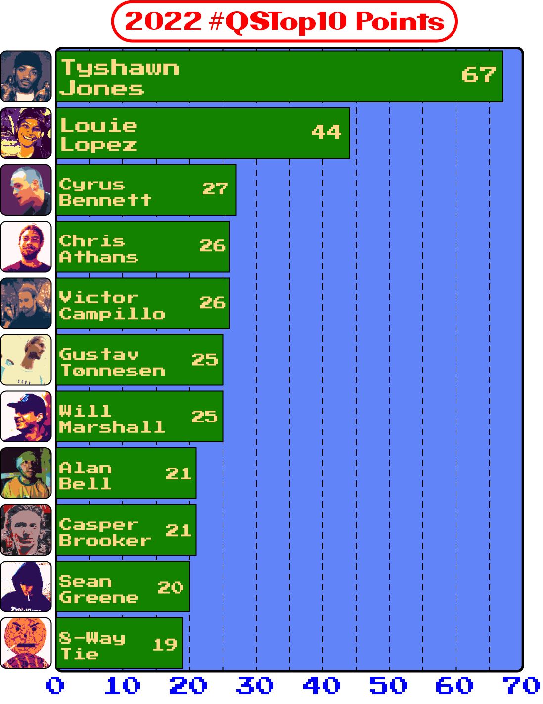
In fact, from a #QSTop10 perspective, Tyshawn Jones might’ve just had the most dominant year of any skateboarder ever. Not only did Tyshawn make seven appearances in the Countdown, a feat never before recorded, but he hit the #1 spot on six of those occasions!
For comparison, Louie Lopez, one of the most consistent Countdown clip producing skaters of all time, also managed a staggering seven appearances in 2022, but only hit the top spot once.
Unlike 2021 when Tyshawn topped the QSTop10 ranks but wasn’t included in Thrasher’s Skater of the Year finalists round-up (but consistent with 2020 when Mason Silva took the QS Points crown and SOTY home), both Tyshawn and Louie were in the mix for both SOTY and QS glory.
The SOTY to QS Points Ranking correlations continue as we note that among Thrasher’s other finalists T-Funk is part of that 8-way tie for 11th place.
And then there's Nyjah, who didn’t show up in the 2022 Countdown at all.
Furthermore, six of the ten highest ranked Points skaters for Quartersnacks were not among the thirty nine SOTY 'contenders'.
SKATER POINTS-BY-YEAR
With 3 years of data under our belts, we can now explore how some of the world's top skaters have held it down year after year after year.
Who's holding strong? Who's blowing up? Who's fading away?
Explore the above line chart to see the year-over-year progression of points for 20 of your faves.
APPEARANCES
With 10 slots available every week for 50 weeks, we have 500 clips logged for 2022. Within that framework, 390 individual skaters made the cut. Of those, 317 (81.3%) made just a singular entry.
Of the 73 multi-appearance workhorses, 52 hit it twice, 13 hit it thrice, and give it up for these 8 maniacs who got in there 4 or more times.
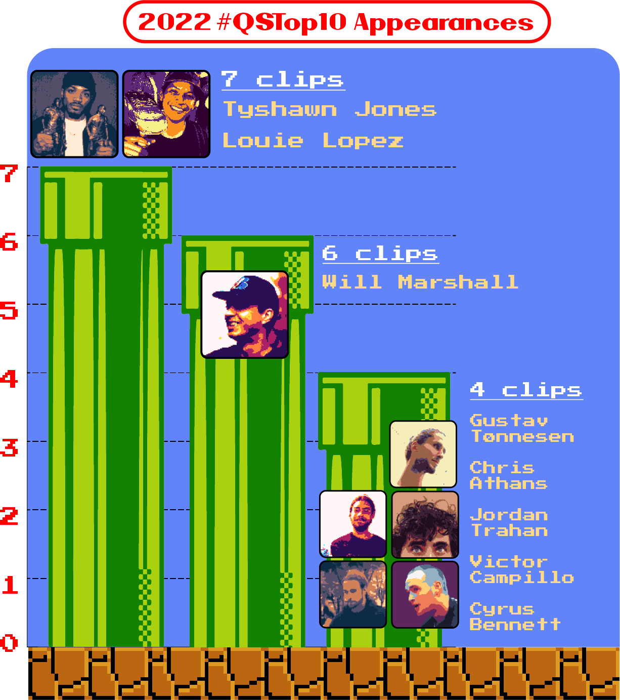
TOP TRICKS of 2022
Before we dig into the trick trends, it is important to understand that we here at 4PLY transcribe tricks on a granular level. This is to say that we regard the totality of the trick when recording it. And while we can and will analyze groupings of similar tricks, know when looking at these trick counts that, for example, a backside noseslide is a different distinct trick from a nollie backside noseslide.
With that in mind, it should come as no surprise that of the 500 tricks presented in 2022, there were 340 unique tricks recorded. This fact is driven further home when we observe that 82.6% of those tricks were performed only once in all the Countdowns of the year.
30 tricks showed up twice, and 13 made three appearances. The following chart maps all the tricks that popped up four or more times.
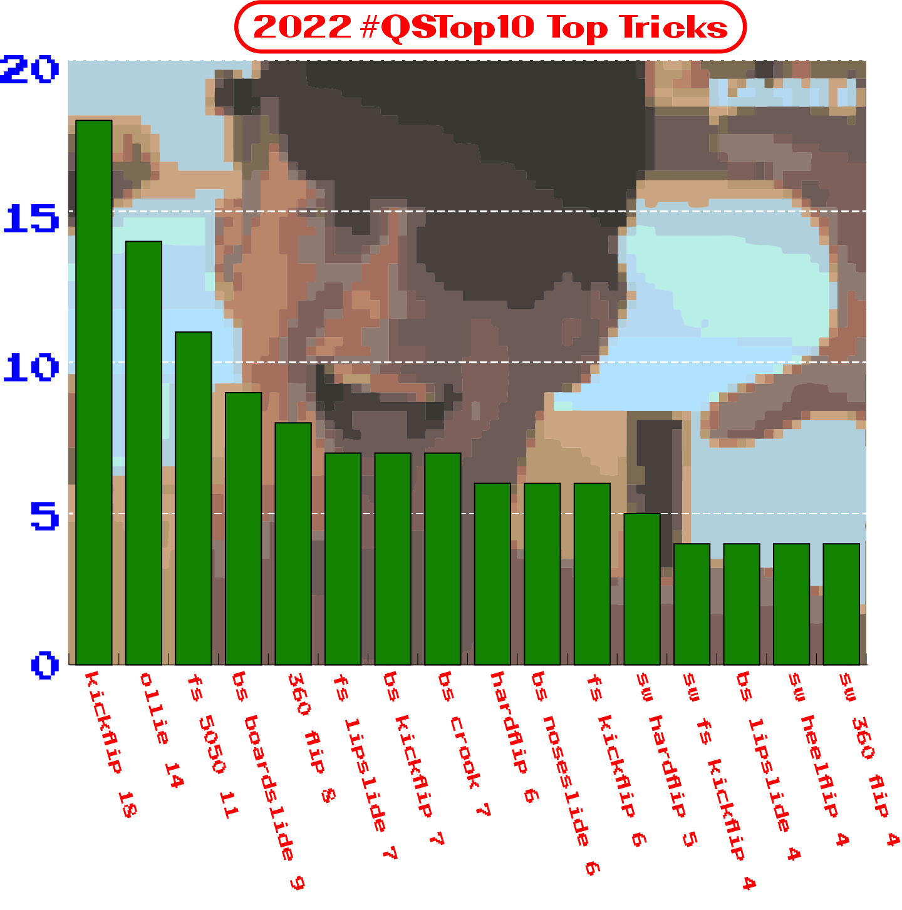
All your favorites are here, with kickflips and ollies topping the charts once again. It is also worth noting that treflips are at about half the level of the previous year, and frontside 50-50s are on the rise along with a significant increase in backside kickflips and crooked grinds. Strategize your next game of SKATE accordingly.
But we aren’t satisfied with just knowing what the most common Countdown tricks were. We also want, ...nay need to know what tricks went down on what obstacles.
Were more nose-oriented tricks done on ledges than tail-oriented? Was there any manual pad tricks done more than once? Were grinds or slides more popular on handrails? What about on flat rails?
Top Tricks By Obstacle
Go ahead and click on any obstacle bar on the above chart for a detailed look into the 2022 trick counts for that genre of apparatus. Then simply click on any specific trick bar to get back to the main obstacle chart. Repeat as desired.
TRICKY (TRICKY) TRICKY (TRICKY) HUH!
- Over 1/5th (107) of all tricks recorded involved a kickflip of some kind!
- 22 tricks were kickflipped into (from all stances).
- 15 tricks were kickflipped out of (we're combining kickflips and nollie flips out here).
- Tricks with a kickflip outnumbered tricks with a heelflip by more than 3 to 1.
- Most likely to flip on the QSTop10: Will Marshall, who executed a flip trick in 5 of his 6 appearances (and shoved in the 6th as well).
- Including flip tricks variations, there were 20 halfcab tricks and and 4 full cabs.
- There were, sadly, zero appearances by Steve Caballero.
- The most common cab trick: “bs 180 to fake manual to bs halfcab” with 3.
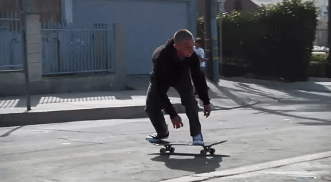
- Tricks incorporating a hardflip (including fakie, switch, and nollie): 19.
- Hippie jump tricks: 4.
- Sum of all blunts: 35.
- Number of nosebluntslide variations: 15.
- 2022’s most blunted: Deedz (2).
- Wallride tricks: 25.
- Most common wallride trick: Ollie to fs wallride (3).
- Wallie tricks: 13.
- Quartersnacks Wall-Crawlers: Campillo, Athans, and Sean Greene (2 each).
- Number of unique tricks that contained some type of shove it: 31 (19 backside : 12 frontside).
- Most likely to Shove It: TJ Rogers (2-for-2 in his clips)
- Most "simple" shove in the Countdown: Nik Stain’s switch frontside shove.
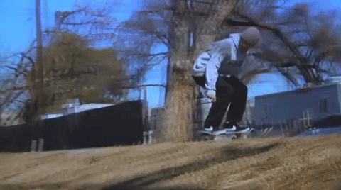
- 240 tricks (48%) contained an element of backside (either rotation or obstacle location) while 162 tricks contained an element of frontside (32.4%).
- 4 tricks had both backside and frontside rotational elements.
- 20 tricks incorporated a 360flip.
- There were 8 normal 360flips, 4 switch 360flips, 1 fakie 360flip, and 0 nollie 360flips.
- Skaters combined 360flips with manuals twice, 1 in and 1 out.
- 5 treflips were into grinds or slides.
- King of Tre: WillMarsh with 2. Both were into backside noseslides.
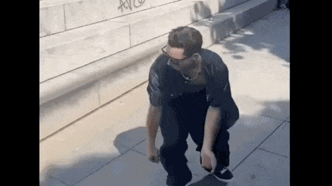
- There was a combined total of 33 crooked grinds (14 backside : 9 frontside).
- Crookedest skater: Felipe Oliveira (crooks in 2 outta 3 appearances).
- 84 tricks were labelled as “oddball”, being either hard to describe or otherwise noteworthy for their uncanny qualities.
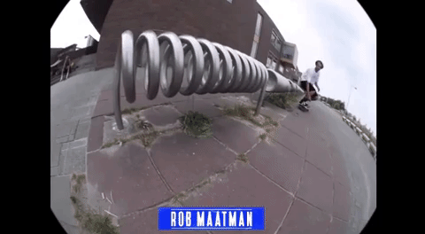
- 4 tricks were labelled as “mindbenders”.
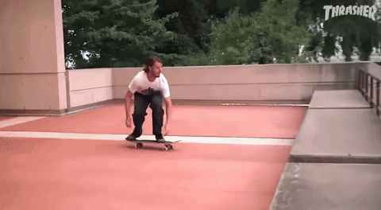
(The boundaries of "oddball" and "mindbender" tricks isn't really clearly defined, but we know them when we see them.) - There were 13 Ride-On tricks.
- Number of unique Slappies: 7.
- There were 5 “Bonks”, including 3 “Deck Bonks”.

- Number of No-Comply tricks: 8.
- Percentage of all 2022 No-Comply tricks done by Jordan Trahan: 38%.
- Percentage of Jordan Trahan's clips that were No-Complies: 75%.
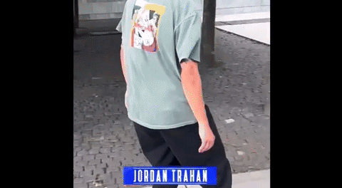
- There were 23 different 5-0 grind variations. None repeated.
- Bump N Jumps: 1.
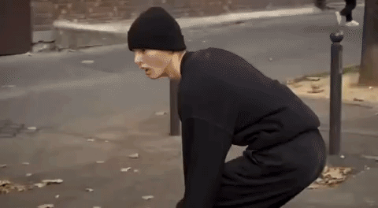
- “Combo” tricks that conspicuously link several tricks together, usually with a manual: 9.
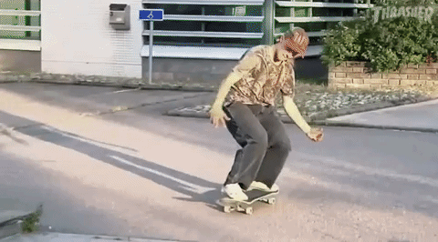
STANCE
While the commonality of ambidextrous skills in contemporary skateboarding is undeniable, when we analyzed the stance each trick is launched from, things were overwhelmingly normal-footed in 2022. 77.2% of tricks were done in the skater’s natural stance, with both switch (10.8%) and nollie (5.2%) tricks in significant decline from the previous year. Fakie tricks, however, stood strong at a consistent 6.8%.
2022’s most switch: Carl Aikens who went opposite footed in 3 out of 3 appearances.
2022 Nolliest: Tyshawn, who went off the nose twice.

OBSTACLES
Upon what did the Countdown champions of Quartersnacks execute their celebrated maneuvers? Take a deep breath and drill down into our interactive exploration of Obstacle breakdowns for 2022 (and beyond).
What we have here is an interactive pie chart breaking down the obstacle percentages for each of the past 3 years, as well as the total for all years combined. What is remarkable about this year-over-year comparison is how similar the breakdown is every year. Very few categories of obstacles change more than a percentage point or two between years.
So we can now definitively state that Quartersnacks likes the ledges and really doesn’t give a shit about transition skating. Data driven facts.
You can even get more intimate with each and every type of obstacle by rolling your mouse (or finger) over any slice to see a list of all the Obstacle Details with counts equal to or greater than 2.
So, if you're angling for a spot in the Countdown; Ledge = good, but Out Ledge = even better.
Want even more information gleaned from the 2022 #QSTop10 dataset?
Here are even more Obstavations for you:
- There were 31 tricks “over” things including:
- 8 tricks over cans.
- 11 tricks over rails.
- 2 tricks over tables.
- 1 trick over a bicycle.
- There was 1 trick over a hydrant and 1 trick around a hydrant, but not tricks on a hydrant.
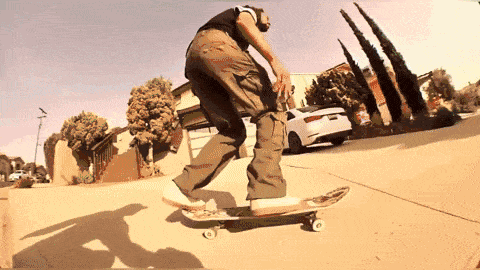
- 42 tricks were “into banks”.
- There were 7 “Up” tricks: 3 up hubbas, 2 up rails, 1 up stairs, and 1 up a gap.
- 3 tricks involved escalators.

- Stair Master: Carl Aikens (3).
- Hubba Hero: Felipe Bartolome (2).
- Manual Master: Victor Campillo (3).
- Prince of Flat Rails: Alexis Lacroix (2).
- Bump to Bar Boys: Tyshawn and Jake Johnson (2 each).
LINES
As always, 4PLY made sure to note when a Top Ten clip was a line, which we define as a sequence of 2 or more consecutive tricks. However, we reserve the right to exclude 2-trick sequences that consist of a primary stunt accompanied by a pre or post-hammer flat ground trick or hill bomb. Also, when counting number of tricks in a line, we don’t include ollies up curbs or powerslides.
2022’s totals included 152 lines, which was down a slight 1.6% from the previous year. This gives us about 3 lines in a typical Countdown week. The most lines a weekly Countdown contained was 6 (happened 3 times), and twice a Countdown didn’t have any lines at all.
The longest lines recorded were 7-tricks narratives by Mason Coletti and, of course, Chris Athans. Coincidentally, both of these lines took place in San Francisco. There were 3 occurrences of 6-trick lines, and 4 occurrences of 5-trick lines.
Line Lord ’22: Looouuuuu - with 4 out of 7 clips being of the line variety.
Also of note: 2 different instances of mirror lines happening.
RUN IT BACK TURBO
Exactly like the percentage of lines, Replayed footage (either replayed in the original clip source, replayed by Quartersnacks for the Countdown, or shown at more than one angle) was down exactly 1.6% from last year. This still gives us a sizable 187 clips with replays. Three weeks had 7 different clips with replays, and only once all year did a weekly Countdown not have any replays.
There were 19 triple replays, and 1 quadruple replay.
Check this out: 1 Clip, 2 Fits (Alan Bell from the April 8th Countdown)
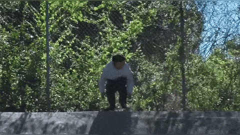
Also worth commenting on since we went to all the trouble to track it is the presence of slow-motion in 174 Countdown clips (34.8%… up slightly from from 2021).
Who's the Slow-Most skater in 2022?
Tyshawn, with 4 of his clips meriting a slow-motion look.
SPOTS
So where in the world are the top clips being filmed? We’re glad you asked.
11.8% clips came from New York City, which might seem low for a NYC website like Quartersnacks, but actually on par when compared to previous years.
The skater with the most New York clips?
Do we even need to tell you it was Tyshawn (6-of-7 clips).
Exactly in line with last year is the presence of 8 clips from the hills of SF. But, that is more of a locale than a spot.
So let’s take a look at where you’ll be wanting to skate this summer.
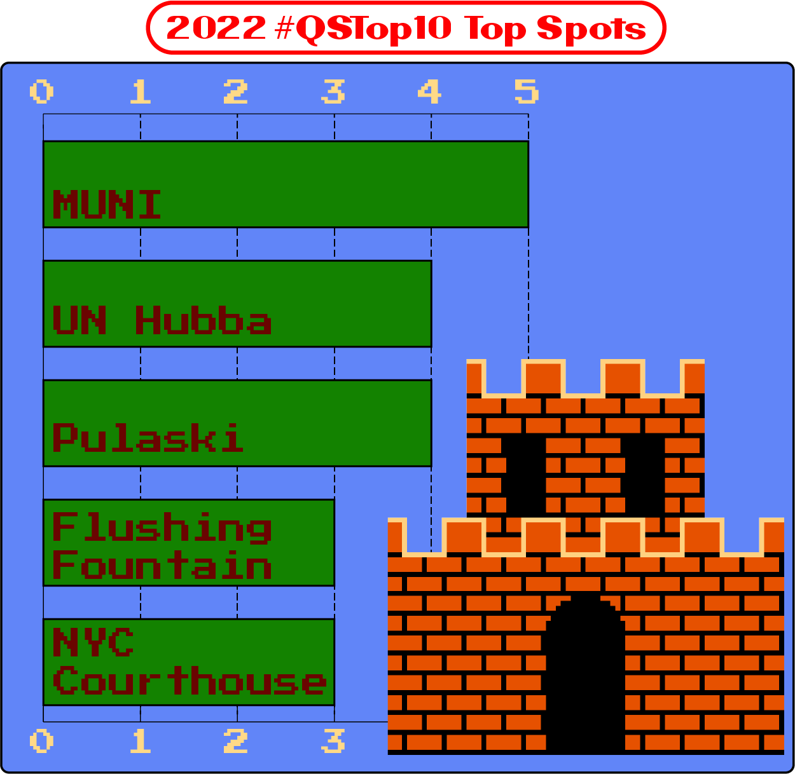
Big ups to all your favorite East Coast spots! Philadelphia’s Muni plaza, popular since the early 90s, has at last ascended the rankings to be the top spot of 2022. Other legendary spots like DC’s Pulaski, Flushing Fountain, and the New York Courthouse got lots of love along with NYC’s latest proving ground, the UN Hubba-to-Ledge.
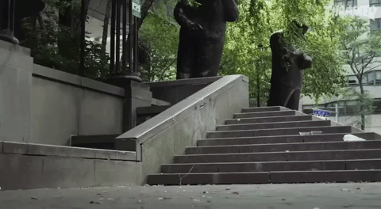
There was a 17-way tie of 2-hitters that reads like a veritable where’s-where of skate tourism goals, with holy grounds like Hollywood High, Pier 7, Jarmers, Universitat, Burnside, the Pyramid Ledges, Union Square (SF), that Paris curved ledge, and the Bay Blocks making a pair of appearances.
Also with just 2 clips each in 2022 are the previously undefeated Milano Centrale plaza and New York’s former fan-favorite Museum of Natural History.
Other Spot Notes to keep your brain occupied include:
- Build me a spot: Etienne back in February.
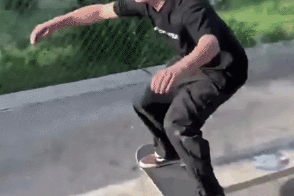
- 2 clips were recorded at a demo.
- 2 tricks filmed in indoor skateparks (not including the previously mentioned demo clip).
- 6 tricks were filmed at concrete outdoor parks (including Burnside clips).
- 5 tricks were filmed at DIY spots.
- At least 4 tricks involved the crazy embankments that are on the sides of stair sets in Europe, which from now on shall be referred to as “Euramps”.
What are those things even for?
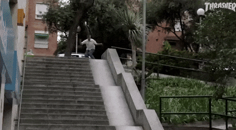
SOURCE VIDEOS
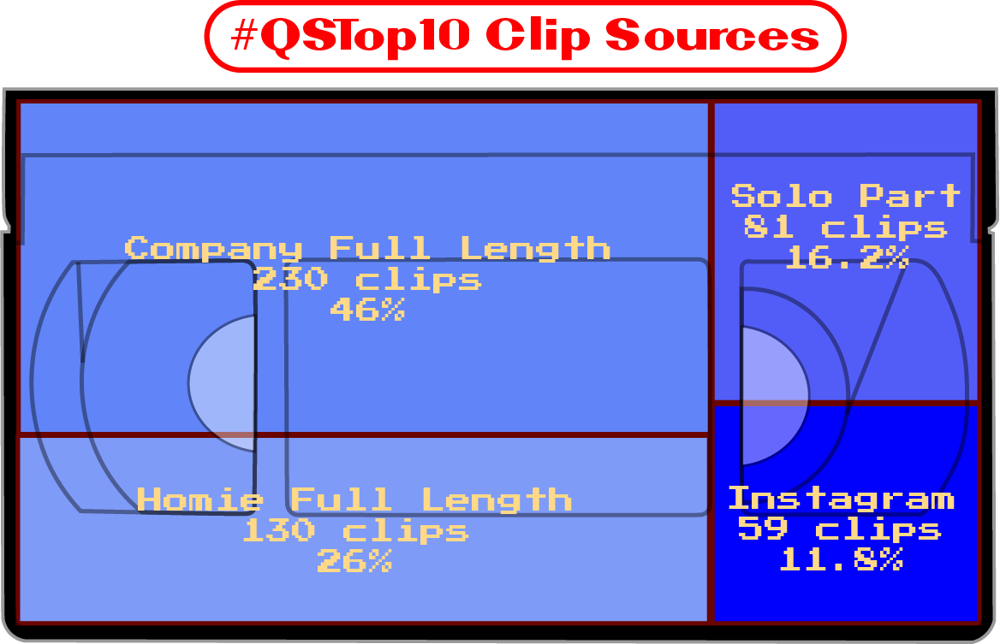
Despite constant declarations that the long-form video is dead, we can see that over 70% of the clips for the QSTop10 come from multi-part videos that once might consider “full-length” or nearly such. Of those videos, 64% are from a company, and 36% are of the “Homie” or independently produced auteur variety.
More significant than the dip in stand-alone solo part stature is the continued decline of relevant footage being culled from Instagram. In 2022, only 59 clips came from social media, which is a 31% percent drop over the 86 IG clips 2021 (which itself was an 18% drop from 2020)!
That being said, the undisputed King of of the 'Gram is, once again, Tyshawn the Gifted One, who had 6 of his 7 clips pulled from the Gram, so don’t call time of death on IG just yet.
Like last year, we also took a look at what brands were backing the videos and clips that made it into the Countdown to see who is getting the best content bang for their buck.
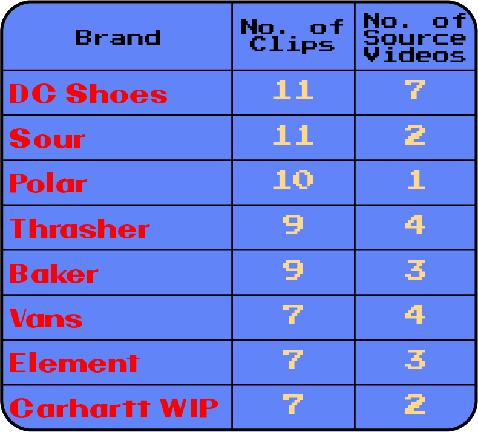
Both Polar and Sour got a full week's worth of clips all to themselves (with Sour getting an extra Gustav clip from there Sucksess bonus edit to put them at 11 overall), but DC Shoes did the best job of leveraging several collaborations and 7 videos to get 11 clips in the #QSTop10. Thrasher also did well with their own original content in 2022.
MORE OBSERVATIONS
- Skaters identifying as women made 14 appearances in 2022, up 2 from the previous year and double the amount in 2020.
- Notable women of 2022 were Mariah Duran for clocking clips in the Countdown on 3 different occasions, Vitoria Mendonça for getting in there twice, and Rayssa Leal for being the first woman to hit the #1 spot.
- Karsten Kleppan got in the Countdown once again in 2022 for skating this curved ledge. Not quite as dipped as last year's Countdown clip on that obstacle, but still pretty damned dipped.
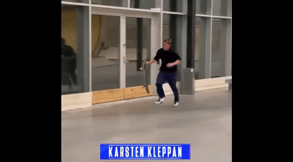
- There were 2 tricks in the pouring rain: Alexis Lacroix and Rowan Zorilla at the Dime Downhill.
- There was 1 trick in the snow: Alexis Lacroix... just like in 2021.
- Hey, Antwuan is back!
- Uncle Freddy also made it into the Countdown in 2022!
- In Week 24, Jesse Alba boardslid some pipes to kick flip out for #8 in the Countdown. Louie Lopez then immediately pulled some 7 Minute Abs with a boardslide to kickflip to boardslide on the Curb Event at the CPH Open for #7.
- There were 37 Slams in the 2022 #QSTop10. That’s a 28% increase from 2021.
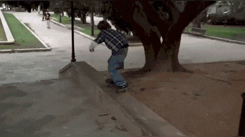
- Lucas Puig was only in the Countdown once in 2022, so you’re damn right he wasn’t wearing a shirt.
- Clips that made it into the Countdown with “Quick Footedness”: 16.
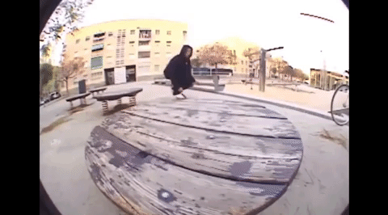
- 12 times did a single slot go to a single skater but featured double-distinct clips. There was also 1 triple clip slot, and even a 1 quad-clipper.
- Traveling?
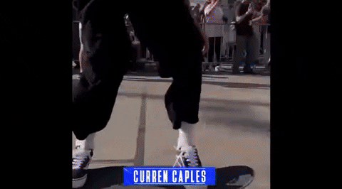
- The most common first name for 2022 was, just like last year, Kevin. There were 7 of ‘em, including Spanky and KB.
- Other common names were Nick (6 + not including Nik Stain), Jake (6), Leo (5 + a Leonardo), Tom (5 + 1 Tommy), and Felipe (4).
- There 4 Johns, 2 Johnnys, 1 Jonathan, and 1 Jonatan
- With all those Jakes, Johns, Jordans (4 of ‘em), it is no surprise that, once again, “J” is by far the most popular letter to start a skater’s name. In fact, there were 13 more J names than last year… 58 total… not including Figgy.
- There were a couple of common last names with 3 occurrences each, but we’ll give it to Williams (3) with an added Willms to push it over the top.
- Most common first letter for a skater’s last name was “B”. Once again, same as last year.
- The average running time for a 2022 QSTop10 Countdown was 2:14. The longest was 3:07 and the shortest was 1:43.
So that’s a wrap on the year in Snacks. The 2023 race for total feed domination is already underway (and we see Victor Campillo has already made an appearance with a manual clip) so you’d better book your ticket to Philly and get your bag of tricks well stocked if you wanna see your name in next year’s #QSTop10 analysis by 4PLY. Might we suggest changing your name to something that starts with the letter “J” and doing some kind of deck bonk trick.
Until then, hit us up on social media or email and keep reaching for the stars. See you in the Quartersnacks #QSTop10 comments.
End of discussion.
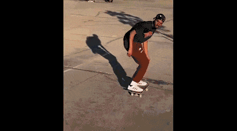